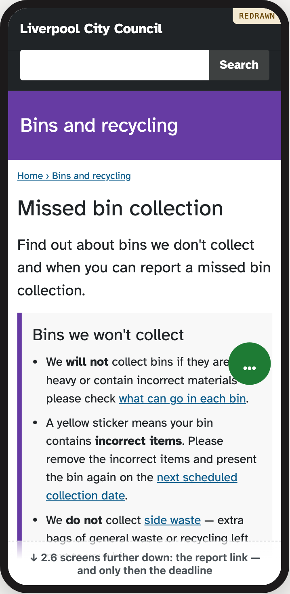
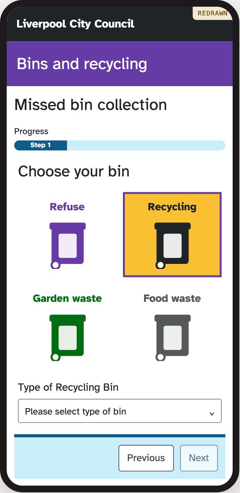
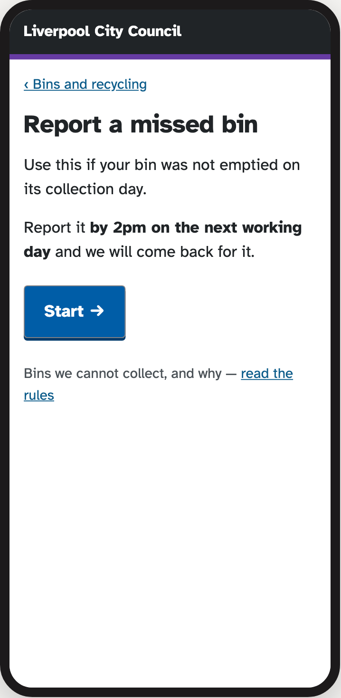
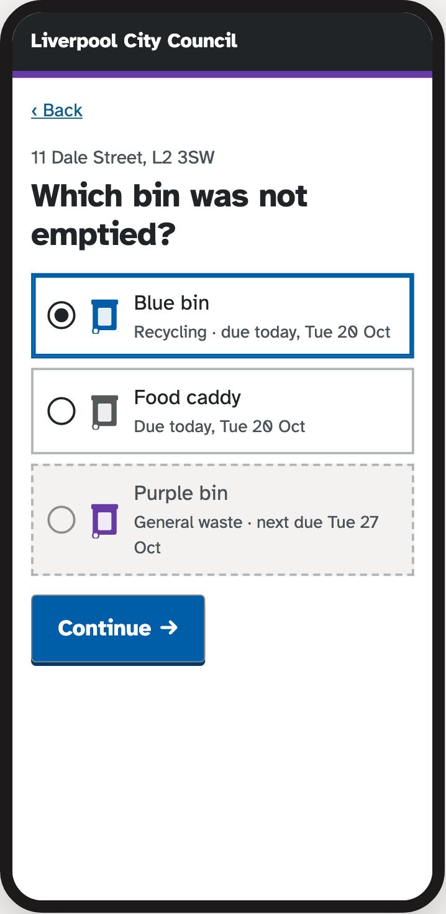

Start here
In this module you take one thing people find hard to do on a screen, show how it works now, and design a better version. You hand in one PDF, by .
A bad experience

Now: the council’s missed bin page (redrawn)

Now: the first question of the form (redrawn)
How it works now
- 1199 words before you can start. The link to report sits 2.6 phone screens down, under the rules for bins they won’t collect.
- 2The deadline comes last. “Report by 2pm on the next working day” is the one rule that matters, and it sits below the link.
- 3Two names for one bin. The page talks about blue and purple bins; the form asks for Refuse or Recycling.
- 4Next will not press, and nothing says why.
The same job, improved

Improved: the start

Improved: which bin
Your version
- 1The deadline first, then one button to start.
- 2Only the bins that were due can be chosen, so nobody reports one too late.
- 3Colour and name together: “Blue bin, Recycling”, the words on the street.
| Counted | Now | Improved |
|---|
| Words before you can start | 199 | 38 |
| Things to fill in or choose | 10 | 4 |
| Taps from the bins page to sending | 17 | 11 |
| Tells you when it will be emptied | no | yes |
A teaching example, not a council design. The whole case, screen by screen.
What you do
- Pick something people find hard to doA website, an app, or how people manage without one: a form, a booking, a message thread.Weeks 1–2
- Show how it works nowScreenshot every step, count it, and mark where people get stuck.Week 5 · process work
- Design a better versionSketch it, wireframe it, then make the finished screens, with your own grid, type and colour.Weeks 3–9 · process work
- Link your screensAdd clicks to your PowerPoint so one screen leads to the next. That is your prototype.Week 10 · prototype
- Explain your choices500–700 words on why, with the numbers to back it up.Weeks 2–10 · rationale
Everything goes in one PowerPoint deck, and you hand it in as one PDF.